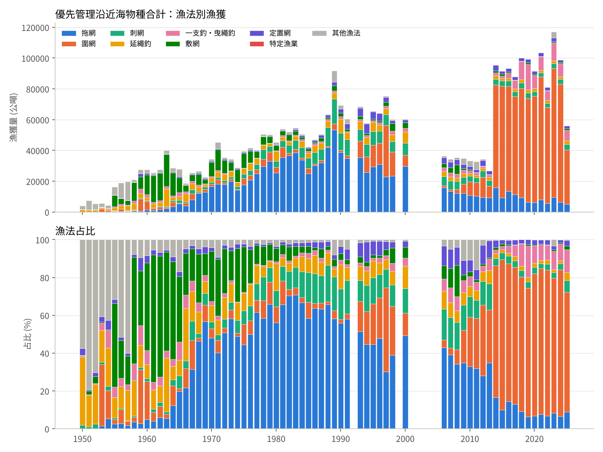
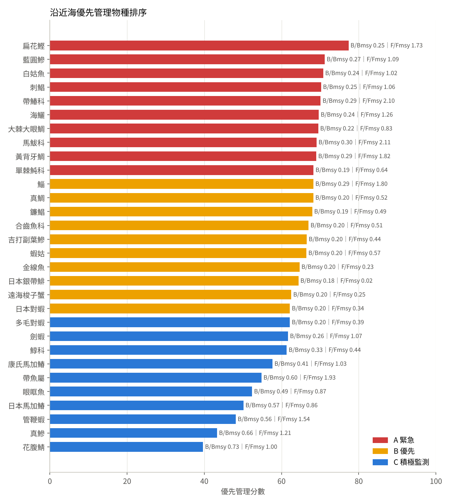

摘要
- 優先管理物種遴選：由沿近海 36 種主要物種中，綜合考量現存相對生物量（B/Bmsy）、漁獲壓力（F/Fmsy）、SSP 資源演變階段、生活史本質脆弱度、歷史產量衰退幅度及產業經濟價值進行多準則綜合評分，界定三大優先管理階層：
- A 級【緊急管理・10 種】：扁花鰹、藍圓鰺、白姑魚、刺鯧、帶鰆科、海鱺、大棘大眼鯛、馬鮁科（午仔）、黃背牙鯛（赤鯮）、單棘魨科（剝皮魚）
- B 級【優先管理・10 種】：鯔（烏魚）、真鯛、鐮鯧（白鯧）、合齒魚科（狗母魚）、吉打副葉鰺、蝦姑、金線魚、日本銀帶鯡（丁香魚）、遠海梭子蟹、日本對蝦（斑節蝦）
- C 級【積極監測・10 種】：多毛對蝦、劍蝦、鯙科、康氏馬加鰆（土魠）、帶魚屬（白帶魚）、眼眶魚、日本馬加鰆、管鞭蝦、真鰺、花腹鯖
- 漁法結構演進特徵：優先物種之捕撈結構出現重大轉變，拖網漁獲占比由 1980 年代之 63.9% 下降至 2015–2025 年之 17.7%；相對地，一支釣與曳繩釣（主要由夜間集魚燈釣白帶魚帶動）自 1.7% 攀升至 28.9%，定置網亦升至 5.7%。白姑魚、午仔、烏魚、真鯛及白鯧等主力魚種之主導漁法，已全面由拖網、圍網或延繩釣轉型為沿岸刺網。
- 底拖漁場資源枯竭警訊：白姑魚、狗母魚、金線魚、大棘大眼鯛、對蝦類、蝦姑及梭子蟹等底棲物種，當前產量普遍已萎縮至歷史峰值 10% 以下，相對生物量（B/Bmsy）僅約 0.2–0.25；除白姑魚（F/Fmsy 1.02）仍面臨過漁外，多數物種捕撈壓力已降至 1 以下（落入黃區），顯示降低拖網壓力後，局部底棲資源仍因各項可能因素而未見恢復趨勢。
- 持續承受過度過漁壓力物種：扁花鰹（F/Fmsy 1.73）、帶鰆科（2.10）、午仔（2.11）、黃背牙鯛（1.82）、烏魚（1.80）、白帶魚（1.93）及管鞭蝦（1.54）等，面臨高捕撈壓力，亟需列為降低漁獲強度之優先對象。
- 關鍵多物種管理主力船隊：西南拖網船隊（涵蓋嘉義、臺南、高雄海域）為多物種聯合管理之首要核心；其次依序為東北拖網船隊、中部拖網與中部沿岸刺網船隊。
- 資源指標下降趨勢判讀：計有 8 種物種之年報組成指標呈現顯著下滑趨勢（扁花鰹、帶鰆科、海鱺、單棘魨科、鐮鯧、劍蝦、眼眶魚、日本馬加鰆），資源萎縮訊號明確且強烈，應優先採取限漁或縮減漁撈努力量措施。
- 三大管理政策主軸
- 分區管理策略：劃分西南拖網、東北拖網、中部拖網與刺網、北部拖網、澎湖海域、西南扒網及東部延繩釣等核心作業單元，並協調東北扒網與跨海峽共有資源之分區管理。
- 時空動態策略：保護繁殖盛期與關鍵產卵棲地，積極控制夜間強光集魚燈功率及拖網總努力量，規範刺網作業尺度與作業時程，並落實最小合法捕撈體長與抱卵禁捕。
- 生態整合策略：落實底拖生態系整體減量管理、保護食物網基層餌料魚、維護敏感育幼棲地、建立氣候調適彈性機制、通盤檢討人工魚苗放流實質成效，並導入港口 CPUE 序列與 BSM 體長頻度進階模式。
漁法結構的長期變動

| 漁法 | 1950–59 | 1960–69 | 1970–79 | 1980–89 | 1990–2000 | 2006–2014 | 2015–2025 |
|---|---|---|---|---|---|---|---|
| 圍網 | 10.0 | 7.8 | 7.0 | 4.9 | 18.6 | 31.8 | 73.5 |
| 拖網 | 2.4 | 19.4 | 53.0 | 63.8 | 46.5 | 30.1 | 8.9 |
| 刺網 | 1.0 | 3.7 | 6.9 | 13.7 | 13.1 | 10.9 | 3.5 |
| 一支釣・曳繩釣 | 6.0 | 5.3 | 1.2 | 1.7 | 2.5 | 4.9 | 8.7 |
| 延繩釣 | 15.3 | 13.4 | 8.3 | 6.8 | 8.2 | 5.5 | 2.0 |
| 敷網 | 26.2 | 41.0 | 18.7 | 4.3 | 3.5 | 4.3 | 0.6 |
| 定置網 | 3.0 | 2.4 | 1.4 | 2.2 | 5.8 | 7.4 | 2.3 |
| 其他網具 | 10.3 | 1.5 | 0.8 | 1.8 | 1.3 | 0.2 | 0.0 |
| 其他 | 20.9 | 2.4 | 0.9 | 0.5 | 0.3 | 4.7 | 0.4 |
| 地曳網 | 4.9 | 2.9 | 1.8 | 0.3 | 0.1 | 0.0 | 0.0 |
| 特定漁業 | 0.0 | 0.0 | 0.0 | 0.0 | 0.0 | 0.0 | 0.0 |
| 籠具 | 0.0 | 0.0 | 0.0 | 0.0 | 0.0 | 0.0 | 0.0 |
| 鏢漁 | 0.0 | 0.1 | 0.0 | 0.0 | 0.0 | 0.0 | 0.0 |
| 合計（t/年） | 13,060 | 27,094 | 40,132 | 55,228 | 64,713 | 40,481 | 92,807 |
表 1 優先管理物種各歷史時期漁法占比（%）與年平均總漁獲量對照總表。
臺灣沿近海漁法結構歷經數次重大轉型：1960 年代以敷網（棒受網、焚寄網等燈火漁業，主要捕撈丁香魚）與延繩釣為主力； 1970 至 1990 年代動力中小拖網全面擴張，西部臺灣海峽與東北海域底棲魚類資源多數由拖網捕獲； 2000 年後受政策減船及油價影響，拖網船數與漁獲大幅減少，刺網、定置網與一支釣占比持續上升； 2014 年後扒網（鯖鰺圍網）躍居產量最大漁法，具體反映了臺灣沿近海漁具現代化轉型與目標魚種之結構性轉變。
優先管理物種排序

| 排名 | 級 | 物種 | B/Bmsy | F/Fmsy | Kobe | SSP 2025 | 脆弱度 | 占峰值% | 近期主要漁法 | 分數 |
|---|---|---|---|---|---|---|---|---|---|---|
| 1 | A | 扁花鰹 | 0.25 | 1.73 | 紅 | 崩潰 | 35 | 9.8 | 定置網 59%、圍網 24% | 77.4 |
| 2 | A | 藍圓鰺 | 0.27 | 1.09 | 紅 | 崩潰 | 35 | 7.8 | 圍網 80%、拖網 12% | 71.2 |
| 3 | A | 白姑魚 | 0.24 | 1.02 | 紅 | 崩潰 | 38 | 7.9 | 刺網 53%、拖網 34% | 70.8 |
| 4 | A | 刺鯧 | 0.25 | 1.06 | 紅 | 崩潰 | 38 | 9.4 | 拖網 80%、刺網 16% | 70.2 |
| 5 | A | 帶鰆科 | 0.29 | 2.10 | 紅 | 恢復中 | 38 | 15.8 | 延繩釣 86%、拖網 12% | 70.1 |
| 6 | A | 海鱺 | 0.24 | 1.26 | 紅 | 崩潰 | — | 8.3 | 延繩釣 26%、刺網 24% | 69.7 |
| 7 | A | 大棘大眼鯛 | 0.22 | 0.83 | 黃 | 崩潰 | — | 4.7 | 拖網 37%、一支釣・曳繩釣 31% | 69.5 |
| 8 | A | 馬鮁科 | 0.30 | 2.11 | 紅 | 恢復中 | 34 | 22.3 | 刺網 66%、拖網 25% | 69.1 |
| 9 | A | 黃背牙鯛 | 0.29 | 1.82 | 紅 | 恢復中 | 44 | 17.5 | 一支釣・曳繩釣 41%、延繩釣 39% | 69.0 |
| 10 | A | 單棘魨科 | 0.19 | 0.64 | 黃 | 崩潰 | — | 2.3 | 刺網 32%、敷網 24% | 68.3 |
| 11 | B | 鯔 | 0.29 | 1.80 | 紅 | 恢復中 | 34 | 15.5 | 刺網 73%、圍網 12% | 68.3 |
| 12 | B | 真鯛 | 0.20 | 0.52 | 黃 | 崩潰 | 44 | 1.8 | 刺網 39%、延繩釣 30% | 68.3 |
| 13 | B | 鐮鯧 | 0.19 | 0.49 | 黃 | 崩潰 | 38 | 1.7 | 刺網 39%、拖網 31% | 68.0 |
| 14 | B | 合齒魚科 | 0.20 | 0.51 | 黃 | 崩潰 | 34 | 2.5 | 拖網 60%、刺網 37% | 67.0 |
| 15 | B | 吉打副葉鰺 | 0.20 | 0.44 | 黃 | 崩潰 | 35 | 2.6 | 拖網 48%、刺網 29% | 66.5 |
| 16 | B | 蝦姑 | 0.20 | 0.57 | 黃 | 崩潰 | — | 3.8 | 拖網 95% | 66.5 |
| 17 | B | 金線魚 | 0.20 | 0.23 | 黃 | 崩潰 | 38 | 0.7 | 拖網 68%、一支釣・曳繩釣 16% | 64.7 |
| 18 | B | 日本銀帶鯡 | 0.18 | 0.02 | 黃 | 崩潰 | — | 0.1 | 敷網 94% | 64.4 |
| 19 | B | 遠海梭子蟹 | 0.20 | 0.25 | 黃 | 崩潰 | 22 | 1.4 | 拖網 68%、刺網 24% | 62.5 |
| 20 | B | 日本對蝦 | 0.20 | 0.34 | 黃 | 崩潰 | 15 | 1.7 | 拖網 88%、其他 6% | 62.2 |
| 21 | C | 多毛對蝦 | 0.20 | 0.39 | 黃 | 崩潰 | 15 | 2.1 | 拖網 62%、刺網 38% | 62.2 |
| 22 | C | 劍蝦 | 0.26 | 1.07 | 紅 | 過度開發 | 15 | 10.2 | 拖網 94% | 61.7 |
| 23 | C | 鯙科 | 0.33 | 0.44 | 黃 | 崩潰 | 38 | 1.9 | 拖網 96% | 61.4 |
| 24 | C | 康氏馬加鰆 | 0.41 | 1.03 | 紅 | 恢復中 | 48 | 23.0 | 刺網 30%、一支釣・曳繩釣 19% | 57.7 |
| 25 | C | 帶魚屬 | 0.60 | 1.93 | 紅 | 完全開發 | 46 | 61.7 | 一支釣・曳繩釣 62%、拖網 13% | 54.8 |
| 26 | C | 眼眶魚 | 0.49 | 0.87 | 黃 | 恢復中 | 38 | 28.0 | 圍網 85%、拖網 8% | 52.4 |
| 27 | C | 日本馬加鰆 | 0.57 | 0.86 | 黃 | 恢復中 | 48 | 25.0 | 刺網 40%、定置網 36% | 50.2 |
| 28 | C | 管鞭蝦 | 0.56 | 1.54 | 紅 | 完全開發 | — | 60.2 | 拖網 90%、其他 8% | 48.2 |
| 31 | C | 真鰺 | 0.66 | 1.21 | 紅 | 完全開發 | 35 | 65.3 | 圍網 75%、拖網 15% | 43.3 |
| 32 | C | 花腹鯖 | 0.73 | 1.00 | 紅 | 完全開發 | 35 | 74.6 | 圍網 95% | 39.7 |
表 2 臺灣沿近海 30 種優先管理指標物種評估清單與分級結果。
各物種漁法變動與管理建議
各物種的漁法變動與保育管理建議，已併入「魚種資源評估與保育管理建議」頁面，列在每個物種基本資訊的下方。點選物種名稱即可前往。
跨洋區高度洄游物種（對照參考）
以下大洋性高度洄游物種之全洋區資源健康狀態，必須以中西太平洋漁業委員會（WCPFC）及北太平洋鮪類及似鮪類國際科學委員會（ISC）之正式資源評估報告為最高依據。臺灣沿岸與近海漁獲僅占全洋區極小份額，表中評估指標僅客觀反映臺灣本土作業之局部動態，不代表全系群狀態。
| 物種 | B/Bmsy | F/Fmsy | Kobe | SSP | 脆弱度 | 主要漁法 |
|---|---|---|---|---|---|---|
| 大目鮪 | 0.19 | 1.11 | 紅 | 崩潰 | 52 | 延繩釣 97% |
| 雨傘旗魚 | 0.31 | 2.03 | 紅 | 恢復中 | 60 | 延繩釣 45% |
| 黃鰭鮪 | 0.28 | 1.56 | 紅 | 恢復中 | 52 | 延繩釣 88% |
| 立翅旗魚 | 0.34 | 1.43 | 紅 | 恢復中 | 60 | 延繩釣 53% |
| 黑皮旗魚 | 0.36 | 1.41 | 紅 | 恢復中 | 60 | 延繩釣 84% |
| 劍旗魚 | 0.39 | 1.42 | 紅 | 恢復中 | 60 | 延繩釣 99% |
| 鬼頭刀 | 0.38 | 1.28 | 紅 | 過度開發 | 24 | 延繩釣 80% |
| 紅肉旗魚 | 0.42 | 1.54 | 紅 | 恢復中 | 60 | 延繩釣 69% |
- 鬼頭刀（鯕鰍）：沿近海延繩釣占 80%，近年定置網占比上升至 11%。新港鬼頭刀延繩釣漁業改進計畫（FIP）已獲國際評定為 Comprehensive（全面推進）最高評等，2026 年進一步導入數位電子標籤產銷追溯系統。本評估之 F/Fmsy 為 1.28，建議持續強化 FIP 執行成效，維持出口溯源管理。
- 雨傘旗魚（芭蕉旗魚）：沿近海延繩釣、東部鏢旗魚與刺網兼存作業。臺灣東部海域為極重要洄游漁場，建議評估數據與 ISC 及 WCPFC 正式報告密切對照，並於東部定置網與刺網船隊推廣兼捕活體即時釋回機制。
- 黃鰭鮪：沿近海延繩釣占 88%。資源狀態應完全遵從 WCPFC 中西太平洋黃鰭鮪全洋區評估結論，國內管理核心在於遵守國際配額、落實卸魚申報查核及壓降小型幼魚捕獲比例。
- 大目鮪：沿近海漁獲幾近全由鮪延繩釣產出。CMSY 顯示臺灣沿近海份額指標偏低，實質反映我國船隊作業重心轉移與漁場變遷，應全面以 WCPFC 區域科學評估結論為判讀基準。
- 旗魚類（黑皮旗魚、白皮旗魚、紅肉旗魚、劍旗魚）：主要由延繩釣及東部傳統鏢漁捕獲，其中鏢旗魚文化占比近年顯著式微。建議與 ISC 各旗魚專案評估小組及 WCPFC 管理措施同步，保障高選擇性之傳統鏢漁文化永續傳承。
- 大洋性鯊魚類（水鮫／鋸峰齒鯊、真鯊屬）：以鮪延繩釣伴隨兼捕為主。國內應持續百分之百貫徹「鰭不離身」執法，並全面落實 WCPFC 鯊魚專案保護措施；鑑於真鯊屬生態本質脆弱度極高（約 70 分），宜建立禁捕物種名錄及海上兼捕活體即時釋放規範。
綜合管理建議與政策藍圖
空間分區治理策略
- 西南拖網管理單元：為臺灣首要之多物種底棲綜合管理核心，統籌涵蓋刺鯧、金線魚、狗母魚、大眼鯛、白鯧、對蝦類、蝦姑、梭子蟹及劍蝦等多種枯竭物種。
- 東北拖網管理單元：統籌涵蓋白姑魚、刺鯧、大眼鯛、狗母魚、斑節蝦、管鞭蝦、蝦姑、赤鯮、白帶魚及劍蝦。本單元應與同海域之鯖鰺扒網船隊明確劃分管理邊界與漁具規範。
- 北部拖網管理單元：以大溪、澳底及基隆為核心，作為劍蝦、白姑魚等重點高價經濟魚種之首要卸魚監測與總努力量管制區。
- 中部拖網與刺網管理單元：涵蓋白鯧、午仔、烏魚、扁花鰹、白腹鯖鰆及白姑魚。重要河口幼魚育幼場環境劣化與雙船拖網作業為該水域主要生態壓力來源。
- 澎湖綜合管理單元：整合拖網、圍網與延繩釣，重點涵蓋土魠、海鱺、真鯛及藍圓鰺；多個指標物種之澎湖產量占比下滑，實質部分反映當地船隊萎縮與人口老化轉型。
- 西南扒網管理單元：涵蓋眼眶魚、吉打副葉鰺及部分藍圓鰺，其船隊規模與目標物種與東北鯖鰺扒網不同，應獨立訂定管理法規。
- 東部延繩釣管理單元：以深海帶鰆科、鬼頭刀及大洋旗魚類為核心，東部定置網之兼捕管理則應獨立設置港口抽樣機制。
- 東北扒網管理單元：以花腹鯖、真鰺、藍圓鰺為核心主體；應於「鯖鰺專案漁業」管理法規下，明確設定船隊總數天花板及強效集魚燈光功率上限。
- 跨海峽共有資源管理：烏魚、土魠、日本馬加鰆、大宗鯖鰺類及單棘魨等跨越臺灣海峽或東海陸棚之共有資源，必須透過兩岸對話與區域科學合作方能落實根本治理。
捕撈時空動態策略
- 關鍵產卵期與產卵場保護：烏魚冬季南下洄游、土魠冬季繁殖聚集、鯖鰺冬春產卵、白鯧與午仔春夏沿岸淺灘產卵；建議導入季節性禁漁期或分區輪流休漁，並結合水溫及海況環境指標建立動態調節機制。
- 集魚燈火漁業強度管控：白帶魚、丁香魚、鯖鰺及鎖管均高度依賴夜間強光作業。建議全面清查並設定集魚燈總功率上限，落實實名登記以有效抑制實質捕撈努力量膨脹。
- 底拖網總努力量實質壓降：除貫徹 3 浬禁拖及 12 浬禁止 50 噸以上拖網規定外，應進一步研議年作業天數上限、強制加大網囊網目孔徑及試辦裝設逃逸隔柵，防範幼魚大量死亡。
- 沿岸刺網規範健全化：刺網已成為白姑魚、午仔、烏魚、真鯛及白鯧等多數枯竭物種近年的第一大捕撈漁法；建議全面實施網片總長、網目尺寸及水下浸網時限登錄，並於產卵盛期限制作業。
- 最小體長管制與抱卵禁捕擴大推動：借鏡蟳蟹類「體長限制＋抱卵禁捕」之成功模式，評估擴大推行至土魠、真鯛、赤鯮及午仔等高經濟魚種，並深化產地卸魚拍賣市場之常態查核。
生態系導向管理（EBFM）
- 落實以生態系為基礎之漁業治理：將白姑魚、金線魚、大棘大眼鯛、合齒魚科及對蝦類等砂泥底棲群落視為單一生態系單元，以降低人為底拖對海底棲地之總擾動面積為核心政策目標。
- 食物網關鍵餌料生物全面庇護：丁香魚、小型鰹類及藍圓鰺等為中上層食物鏈之基層支柱，其可捕量目標訂定應較一般經濟魚種採取更為審慎保守之預警原則。
- 海洋關鍵棲地完整性維護：河口、海藻床、珊瑚礁區及淺海沙泥育幼場，應全面納入海岸開發環評、重要濕地審議及海洋保護區（MPAs）網絡整體規劃。
- 氣候變遷調適機制建置：海洋持續增溫導致烏魚等洄游性物種之路徑北移、產卵場位移及汛期縮短；各項時空禁捕法令應保留依據海洋環境監測即時調控之制度彈性。
- 人工放流政策實質成效檢討：針對真鯛、黑鯛、斑節蝦等長期放流魚種，應建立科學標識回捕率評估與基因多樣性衝擊查核，嚴正防範「以盲目放流取代嚴謹漁業管理」之政策迷思。
- 科學數據健全與進階模式建置：依據重點港口各縣市、分漁法之卸魚資料建立標準化 CPUE，逐步升級至 BSM 體長頻度模式；並於第一線拍賣市場分開記錄花鰹類、鯖鰺類等長期合併項目。
政策推動時程規劃
- 第 1 年（基礎盤點期）：依各大管理單元（西南拖網、東北拖網、中部拖網與刺網）全面建立努力量基線（包含合法船數、年作業天數及燈火總光力）；針對同步急降之 8 種指標物種優先實施努力量凍結。
- 第 2 至 3 年（試辦與深化期）：劃設 1 至 2 處底拖禁漁生態示範區並啟動長期底棲復育監測；評估推展鯖鰺 2 至 3 月產卵期分區輪流休漁；結合港口抽樣資料正式建置標準化 CPUE 序列與 BSM 評估模型。
- 第 3 至 5 年（全面落實期）：依據科學監測與成效評估滾動調整禁休漁期與努力量天花板；積極推展烏魚、土魠、鯖鰺等跨界系群之兩岸漁業科技對話與區域資料互惠交換機制。
評估資料之限制與不確定性
- 臺灣《漁業統計年報》歷史上於 1989 年及 2014 年經歷物種分類與漁業代碼之重大調整，部分物種漁法占比之劇烈消長含有統計分類口徑轉換之因素（如 2014 年起扒網全面取代巾著網、部分經濟魚種併入其他雜項）。
- CMSY++ 評估模式僅以漁獲量時間序列為核心輸入，評估末年相對生物量承載力比（B/k）受先驗設定影響顯著；此外歷史漁獲量之萎縮亦可能部分源於政府獎勵減船、油價高漲及各項法規限制作業，評估結論宜審慎配合實務動態客觀解讀。
參考資料與引用法規文獻
農業部漁業署：沿近海拖網漁船禁漁區與滾輪式網具管理規範（2017）
行政院農業委員會：蟳蟹類漁獲管制措施（最小甲寬限制與抱卵母蟹禁捕規範）
農業部漁業署：蟳蟹類保育管理措施執行成效評估報告（2026）
農業部漁業署：鯖鰺漁業管理辦法（每年 6 月北緯 24 度以北海域禁漁規範）
水產試驗所：臺灣周邊海域鯖鰺資源動態與產卵期保護效益評估研究
農業部漁業署：魩鱙漁業管理規範（年度禁漁期與總容許捕撈量管制）
臺灣鬼頭刀漁業改進計畫（FIP）工作小組：鬼頭刀漁業改進成果與國際永續溯源認證進展
Froese, R., & Kesner-Reyes, K. (2002). Impact of fishing on the abundance, biomass, and trophic structure of marine organisms in European seas. ICES CM.